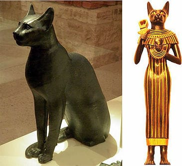
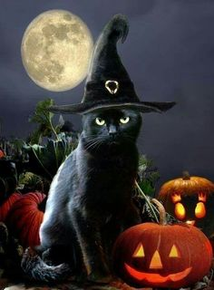
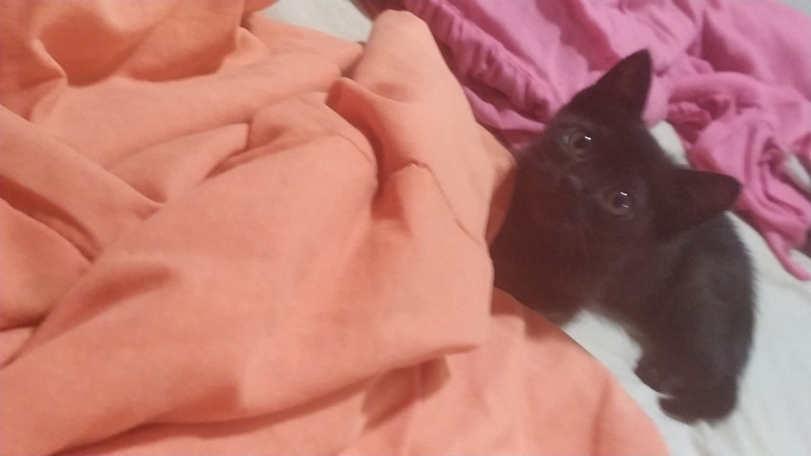

10.000 anos atrás os gatos começaram a ser domesticados para exterminar roedores. Eles foram cultuados por povos. Os Egípcios que até possuíam deuses com cabeças de felinos. Um desses deuses era Bastet, deusa da fertilidade. Os babilônicos acreditavam que o gato surgiu de um espirro de um leão.

Durante a Idade Média, os gatos foram demonizados pelos cristãos por acreditatem que eles tinham um vínculo forte com religiões pagãs. Papa Gregório IX determinou as extinção destes felinos.

Por conta deste decreto, os roedores infectados de praga aumentaram e isso foi um fator que potenciou a peste bubônica.

Copyright © Todos os direitos reservados